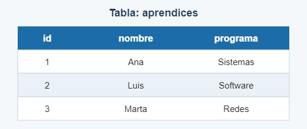

Esta guía te explica, paso a paso y sin términos complicados, qué es una base de datos SQL y cómo hacer tu primera consulta.
Una base de datos es un lugar donde se guarda información organizada, como la lista de aprendices de una ficha. En una base de datos relacional, los datos se guardan en tablas formadas por filas y columnas.
El lenguaje que se usa para pedirle cosas a la base de datos se llama SQL, sigla de Structured Query Language (lenguaje de consulta estructurado).

Estos comandos no tienen un orden fijo; úsalos según lo que necesites hacer:
Aquí el orden sí importa, así que sigue los pasos en secuencia:
SELECT * FROM aprendices;Recuerda terminar cada instrucción con punto y coma (;).
Puedes practicar con ejercicios gratuitos en este tutorial: Tutorial de SQL en W3Schools (se abre en otra pestaña).